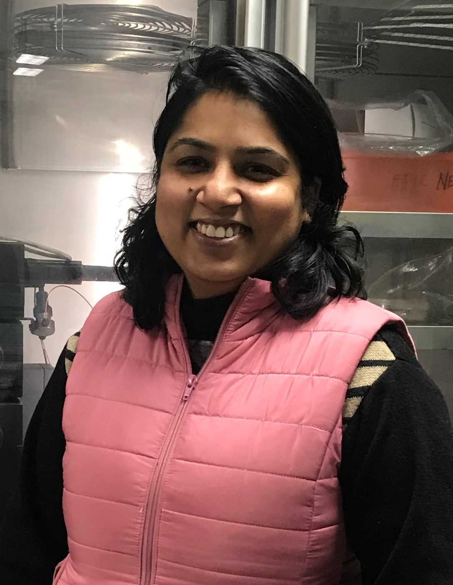

The beauty of science lies in understanding the unseen, where intricate RNA structures and molecular interactions shape the hidden language of cellular life and continue to inspire curiosity, discovery, and deeper exploration.
|
 |
Welcome to the JAIN LabThe JAIN Lab focuses on RNA structural biology, solution-state NMR spectroscopy, RNA–protein interactions, RNA–ligand recognition, and biologically important non-coding RNA structures. Research in the lab combines NMR spectroscopy, RNA biochemistry, molecular biology, and biophysical approaches to understand how RNA structure and dynamics influence biological function. |
Structural and dynamic studies of functional RNA motifs using NMR spectroscopy and biophysical methods.
Mechanistic studies of RNA recognition by RNA-binding proteins in viral and cellular systems.
Structure-function studies of long non-coding RNAs, including MALAT1-associated RNA motifs.
Understanding how small molecules interact with structured RNAs and influence stability or function.
Home
About
Research Projects
Publications
Lab Members & Alumni
Recreational Photos
Contact
News
Dr. Niyati Jain
Assistant Professor (Research)
Faculty In-charge, NMR Facility
Ashoka University
Email:
Niyati.jain@ashoka.edu.in
niyati2002us@gmail.com